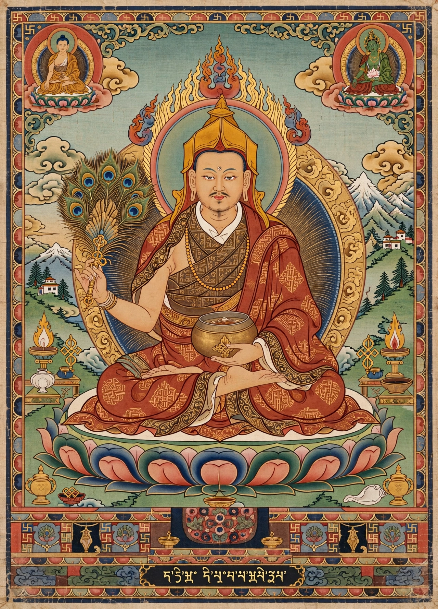

| Born | 982, Bikrampur, Bengal (present-day Bangladesh) |
|---|---|
| Died | 1054, Nyethang, Tibet |
| Known for | Reviving Buddhism in Tibet; author of Lamp for the Path to Enlightenment |
| Institutions | Vikramashila, Odantapuri |
| School | Mahayana / Vajrayana; founder-inspiration of the Kadampa school |
Atisha Dipankara Shrijnana (Bengali: অতীশ দীপঙ্কর শ্রীজ্ঞান; 982–1054) was a Bengali Buddhist master of the Pala period, abbot of Vikramashila monastery, and the central figure in the "later diffusion" of Buddhism in Tibet. His short treatise Bodhipathapradipa (A Lamp for the Path to Enlightenment) became the model for the Tibetan lamrim ("stages of the path") genre, and through his disciple Dromtön his lineage became the Kadampa school, a principal ancestor of the later Gelug tradition of the Dalai Lamas.
Atisha was born into a royal family of Bikrampur in Bengal. Renouncing a princely life, he studied widely in the monastic universities of eastern India — including with the logician Jetari and the tantric master Rahulagupta — and was ordained into the Mahasanghika lineage. Seeking instruction on bodhicitta, he sailed to Suvarnabhumi (probably Sumatra, in the Srivijaya empire), where he spent twelve years studying under the master Dharmakirti of Suvarnabhumi (Serlingpa). Returning to India, he rose to become abbot of Vikramashila, the Pala monarchy's chief monastery, and was famed as a debater and as a holder of all three streams of Indian Buddhist practice — sutra, tantra, and the mind-training teachings.
The kings of the western Tibetan kingdom of Guge, Yeshe-Ö and his great-nephew Jangchub Ö, twice sent missions inviting Atisha to reform Tibetan Buddhism, which had fragmented since the collapse of the Tibetan Empire; Yeshe-Ö is said to have been captured by the Qarakhanids while seeking gold for the invitation and to have died in captivity rather than be ransomed with funds meant for the mission. Atisha finally accepted, traveling via Nepal in 1040–1042 and arriving in western Tibet, where at Tholing he composed the Lamp for the Path at Jangchub Ö's request. The 68-verse root text organizes the whole of the Mahayana path according to the capacities of beings of small, middling, and great scope — the template for all later lamrim literature, including Tsongkhapa's Great Treatise.
Atisha spent his remaining thirteen years teaching across Tibet, working with the translator Rinchen Zangpo, reviving monastic ordination lineages, and founding temples; he died in 1054 at Nyethang near Lhasa, where his reliquary stupa was later housed.
His chief Tibetan disciple, Dromtön (1005–1064), founded Reting Monastery in 1056 and organized Atisha's followers into the Kadampa school, whose emphasis on monastic discipline, devotion to the teacher, and the mind-training (lojong) slogans deeply shaped all later Tibetan Buddhism. Atisha's remains and image are venerated in both Tibet and his native Bengal, where he is remembered as one of the greatest sons of the Bangladeshi and Indian Buddhist heritage; in 1978 Bangladesh ceremonially received a portion of his ashes from Tibet.